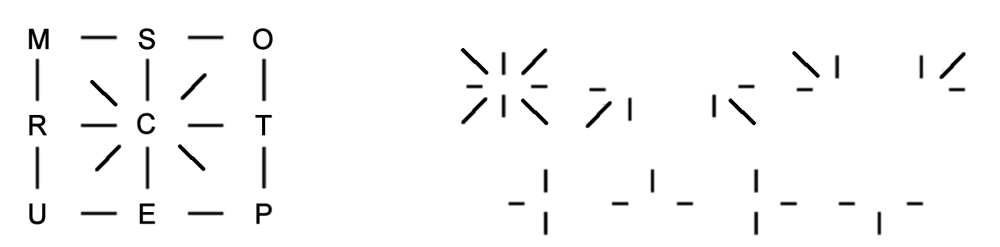

Problem ID 88113
Try to read the word in the first figure, using the key $($see the second figure$)$.

Hint
Do the key elements not remind you of small fragments of the main picture?
Solution
The key shows which arrows depart from the location of a letter which we must choose. As a result, the we get the word COMPUTERS.
Answer
COMPUTERS